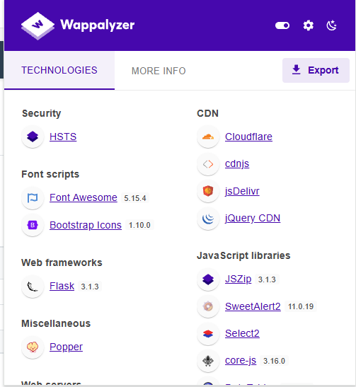
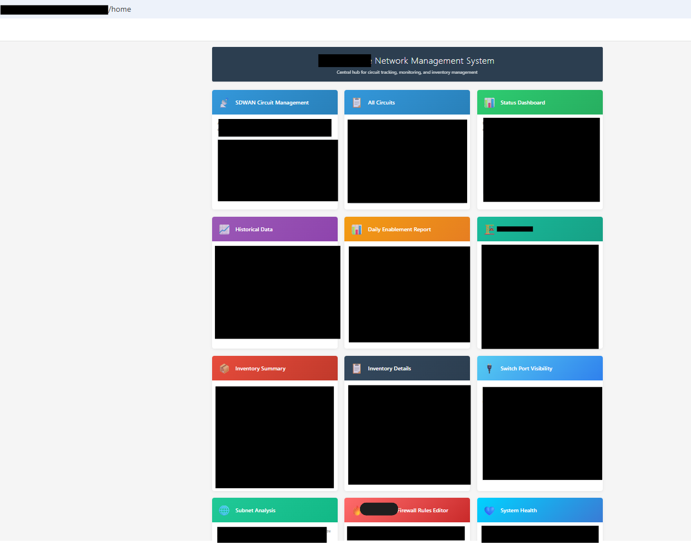
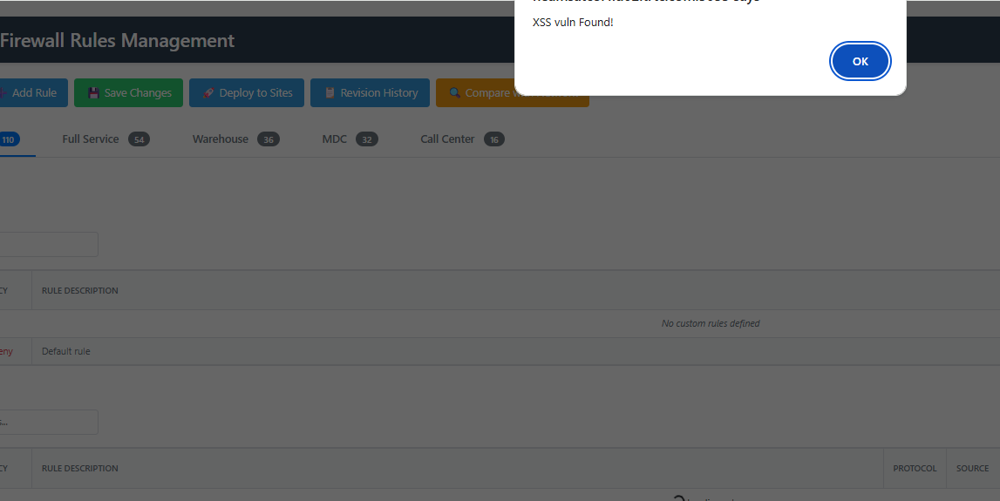
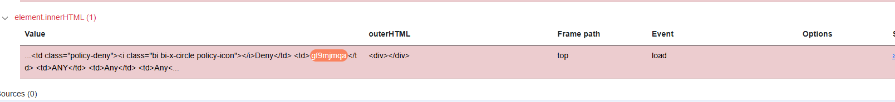
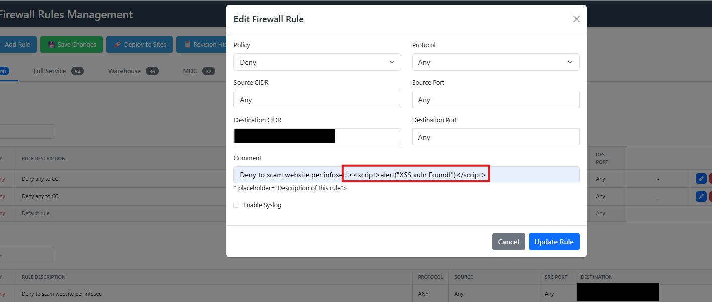

Network Management System (NMS)
Cross-Site Scripting Assessment
Stored and reflected XSS in the firewall rule management interface
| Document reference | PT-NMS-2025-001 |
| Version | 2.0 (Public redacted release) |
| Assessment type | Manual grey-box web application penetration test |
| Target environment | Non-production development instance |
| Authorization | Written permission obtained from the system owner prior to testing |
| Assessor | Independent security researcher |
| Report date | 26 October 2025 |
| Classification | Confidential — all identifying detail removed for publication |
Testing was authorized in writing by the system owner against a development instance containing no production data. Host names, addresses, credentials and organizational identifiers have been redacted for public release. All testing and evidence collection were performed manually.
1Executive Summary
A manual penetration test was performed against the firewall management module of an internally developed Network Management System (NMS) — a Flask and JavaScript application that aggregates data from network infrastructure and cloud-based firewall APIs into dashboards used by Network Operations Centre (NOC) staff.
The assessment identified one High-severity and three Medium-severity issues. The principal finding is a stored cross-site scripting vulnerability in the firewall rule comment field. Any authenticated user — including a low-privileged one — can persist arbitrary JavaScript that executes automatically in the browser of every operator who subsequently loads the firewall rule table, with no interaction beyond viewing the page.
The business significance is disproportionate to the technical simplicity of the flaw. The affected application is a privileged administrative console for network perimeter controls. An attacker who executes script in a NOC operator's authenticated session can act as that operator: creating permissive firewall rules, disabling logging on existing rules, or exfiltrating the session and API material the console holds. A single stored payload therefore converts a low-privileged application account into a potential route to modifying the organization's network perimeter — a privilege escalation and lateral movement path, not merely a browser-level nuisance.
Notably, the vulnerability does not originate in the upstream cloud firewall API, which returned
data correctly. It was introduced entirely by how the NMS front end rendered that data: untrusted values were
interpolated into HTML string templates and written to the DOM via element.innerHTML without encoding.
This is a single, systemic coding pattern rather than an isolated defect, and it recurs at several points in the
same rendering function.
The application was developed with AI-assisted code generation. The findings illustrate a governance gap rather than a tooling failure: generated code was deployed without the secure code review and output-encoding standards that would normally apply to hand-written code. The remediation recommended in Section 7 addresses both the specific defects and that underlying process gap.
Overall risk rating: HIGH (pre-remediation, assessed in the context of an internal administrative console). All findings were reported to the system owner through a coordinated disclosure process and were reported as remediated; see Section 8 for the retest position.
2Scope and Methodology
2.1 Scope
| Item | Detail |
|---|---|
| Application | Internal Network Management System (NMS) — web interface |
| In-scope path | /firewall (firewall rule management view) |
| In-scope endpoint | /api/firewall/template/{template}/update |
| Environment | Development instance; no production data or infrastructure |
| Test type | Grey-box — authenticated low-privileged application user |
| Excluded | Upstream cloud firewall API provider infrastructure; underlying network devices; denial-of-service testing; social engineering; physical security |
2.2 Methodology
Testing followed the OWASP Web Security Testing Guide (WSTG) v4.2, focusing on the input
validation test cases WSTG-INPV-01 (Reflected XSS) and WSTG-INPV-02 (Stored XSS), and was
structured along PTES phases: reconnaissance, technology enumeration, vulnerability identification,
manual exploitation and proof-of-concept development, impact analysis, and reporting.
Initial network-level reconnaissance (nmap) and generic web scanning (nikto) returned
limited value against a single-application target and were deprioritized in favour of manual, application-focused
analysis — proxy interception, source review and DOM sink tracing. Exploitation was confined to
non-destructive proof-of-concept payloads (alert() and benign markup); no payload was used that would
have altered firewall state, persisted beyond the test records, or affected other users outside the agreed
test window.
Tooling
| Tool | Purpose |
|---|---|
| Burp Suite Professional | Proxy interception, request manipulation, payload delivery and response analysis |
| Wappalyzer | Client-side technology and component version enumeration |
| Browser Developer Tools / DOM Invader | JavaScript sink identification and source-to-sink data flow tracing |
| nmap, nikto | Initial reconnaissance (limited applicability; deprioritized) |
2.3 Application architecture
The relevant data flow, established during enumeration, is as follows. The vulnerability is introduced at step 5 — client-side rendering — not in the upstream API.
[ User browser ]
│
│ (1) jQuery AJAX request
▼
[ Front-end JavaScript ]
│
│ (2) → /api/firewall/...
▼
[ Flask route (Python) ]
│
│ (3) Authenticated API call to external system
▼
[ External cloud firewall API ]
│
│ (4) Rule data returned
▼
[ Flask back end ] ──(5) JSON to front end──▶ [ Front end renders rule table ]
▲
┌───────────────┴───────────────┐
│ ◀── VULNERABILITY INTRODUCED │
│ Unencoded interpolation into │
│ element.innerHTML │
└───────────────────────────────┘2.4 Enumeration results
Component enumeration identified the client-side stack and, critically, the version numbers used to assess finding NMS-04. The back-end framework (Flask 3.1.3) was current at the time of testing and no framework-level vulnerability was identified.

The NMS landing page presents multiple tiles sourced from different network systems. Attack surface analysis
prioritized paths accepting user-controlled input; the /firewall tile, which exposes a rule editor with
a free-text comment field, was selected as the primary target.

3Summary of Findings
| ID | Finding | Severity | CVSS v3.1 | CWE | OWASP 2021 |
|---|---|---|---|---|---|
| NMS-01 | Stored XSS in firewall rule comment field | High | 8.7 | CWE-79, CWE-80 | A03 |
| NMS-02 | Reflected XSS in rule update response | Medium | 5.4 | CWE-79 | A03 |
| NMS-03 | HTML and hyperlink injection enabling in-application phishing | Medium | 4.1 | CWE-80, CWE-116 | A03 |
| NMS-04 | Outdated third-party JavaScript components with known CVEs | Medium | up to 7.5* | CWE-1104, CWE-1395 | A06 |
| NMS-05 | Missing browser hardening headers and cookie attributes | Low | — | CWE-693, CWE-1004 | A05 |
| NMS-06 | Client-side technology and version disclosure | Info | — | CWE-200 | A05 |
* NMS-04 carries vendor-published CVSS scores for the candidate CVEs; exploitability in this application's specific usage context was not confirmed. See the finding for qualification.
Severity distribution
| Critical | High | Medium | Low | Informational |
|---|---|---|---|---|
| 0 | 1 | 3 | 1 | 1 |
4Detailed Findings
Stored Cross-Site Scripting in Firewall Rule Comment Field
High| CVSS v3.1 | 8.7 (High) CVSS:3.1/AV:N/AC:L/PR:L/UI:R/S:C/C:H/I:H/A:N |
| CWE | CWE-79 (Improper Neutralization of Input During Web Page Generation); CWE-80 (Improper Neutralization of Script-Related HTML Tags) |
| CAPEC | CAPEC-592 (Stored XSS) |
| OWASP Top 10 2021 | A03:2021 — Injection |
| OWASP ASVS 4.0.3 | V5.3.3, V5.3.4 |
| Affected asset | /firewall — rule table renderer; /api/firewall/template/{template}/update |
| Parameter | comment (firewall rule comment field) |
Description
The firewall rule editor accepts arbitrary input in the rule comment field, persists it without
sanitization, and later renders it into the rule table as raw HTML. No encoding is applied at input, at storage,
or at output. Any user able to create or update a firewall rule can therefore store executable script that runs in
the browser of every subsequent viewer of the rule table.
This is the most severe finding because the payload is persistent and self-delivering: the attacker does not need to induce a victim to click a crafted link. Execution occurs as a routine consequence of an operator opening the firewall page — an action NOC staff perform as part of normal duties, and one that disproportionately affects the highest-privileged users of the system.
CVSS justification
PR:L — any authenticated user with rule-edit rights can inject. UI:R — a victim must
load the rule table, though this is routine operational behaviour rather than a meaningful barrier.
S:C — the vulnerable component (the web application) and the impacted component (the victim's browser
session and, transitively, the upstream firewall API accessed through it) differ. C:H/I:H — reflects
the privileged administrative nature of this specific console: a hijacked operator session confers the ability to
read and modify network perimeter rules. This rating is context-specific; the same defect in a low-privilege
application would warrant C:L/I:L.
Reproduction
- Authenticate to the NMS as any user with firewall rule edit permissions.
- Navigate to
/firewalland create or edit a rule. - Submit the following in the
commentfield:<script>alert(document.domain)</script> - Save the rule. The request is issued to
/api/firewall/template/{template}/update. - Reload
/firewall, or have any other user do so. The payload executes in their browser context.
An event-handler payload, which bypasses naive <script>-tag filtering, was also confirmed
against the same sink:
<img src=x onerror=alert(document.domain)>Evidence


element.innerHTML within the rule table row, on the load event, confirming the sink.Business impact
What was demonstrated: arbitrary script execution in the browser context of a user viewing the firewall rule table, persisting across sessions. The consequences below follow from that capability given the privileges the console holds; state-changing actions were not exercised during testing, as the engagement was limited to non-destructive proof of concept.
- Administrative session hijacking. Script executing in a NOC operator's session could issue authenticated requests as that operator, including firewall rule creation and modification.
- Unauthorized perimeter change. An attacker could potentially perform any authenticated action available to the victim operator — creating permissive rules, or disabling syslog on existing rules — degrading both the control and the audit trail that would evidence the change.
- Privilege escalation. A low-privileged application account becomes an indirect route to high-privileged network control — a lateral movement path from a minor account compromise to infrastructure impact.
- Attribution failure. Actions performed through a hijacked session are logged as the victim operator, undermining incident investigation and non-repudiation.
- Persistent foothold. Because the payload is stored, it continues to execute against every viewer until explicitly located and removed from the data store.
Remediation
Detailed guidance is given in Section 7. In summary: replace innerHTML construction with safe DOM
APIs, apply contextual output encoding, enforce server-side input validation, and deploy a restrictive Content
Security Policy as a compensating control.
Reflected Cross-Site Scripting in Rule Update Response
Medium| CVSS v3.1 | 5.4 (Medium) CVSS:3.1/AV:N/AC:L/PR:L/UI:R/S:C/C:L/I:L/A:N |
| CWE | CWE-79 (Improper Neutralization of Input During Web Page Generation) |
| CAPEC | CAPEC-591 (Reflected XSS) |
| OWASP Top 10 2021 | A03:2021 — Injection |
| OWASP WSTG | WSTG-INPV-01 |
| Affected asset | /api/firewall/template/{template}/update |
Description
Input supplied to the rule update endpoint is returned unencoded in the immediate HTTP response and rendered into the page, producing reflected XSS in addition to the stored variant. This finding is rated lower than NMS-01 because delivery requires the victim to be induced to submit the crafted request, rather than executing automatically on a routine page load.
Discovery and reproduction
Testing began with special-character probing of the comment field. Observing that < and
> were returned unescaped, injection was confirmed incrementally:
<h1>test</h1>— rendered as a heading, confirming HTML injection.<script>alert(1)</script>— executed, confirming script injection.
The application applies partial payload filtering: some inputs are rejected, but
<script> tags pass through. A denylist that permits the canonical XSS payload provides no
meaningful protection and should not be relied upon; it is superseded by the encoding controls in Section 7.
Attribute-context breakout
Testing further established that the comment value is reflected into the value attribute of the
editor's input element, and that the attribute can be escaped. The payload below terminates the attribute and the
enclosing tag before opening a script element:
'><script>alert("XSS vuln Found!")</script>Figure 5 shows the result. The residual markup " placeholder="Description of this rule"> is
visible as literal page text below the input — the remains of the original element's attributes, orphaned once the
payload closed the tag early. This is direct confirmation that the value is written into an attribute context with
no encoding of quote characters.
The distinction is material for remediation: a fix that encodes only < and >
will not prevent this, because the breakout is achieved with a quote character. See Section 5.2.
Evidence

" placeholder="Description of this rule"> text beneath the input evidences successful attribute-context breakout.
Business impact
- Session token and credential theft where cookies lack
HttpOnly(see NMS-05). - Forced state-changing actions performed in the victim's authenticated context.
- A viable delivery vector for a targeted attack against a specific named operator, for example via an internal chat or ticketing link.
HTML and Hyperlink Injection Enabling In-Application Phishing
Medium| CVSS v3.1 | 4.1 (Medium) CVSS:3.1/AV:N/AC:L/PR:L/UI:R/S:C/C:L/I:N/A:N |
| CWE | CWE-80 (Improper Neutralization of Script-Related HTML Tags); CWE-116 (Improper Encoding or Escaping of Output) |
| OWASP Top 10 2021 | A03:2021 — Injection |
| Affected asset | /firewall — rule table renderer |
Description
Independently of script execution, benign-looking HTML markup is rendered unsanitized. Anchor tags in particular are rendered as live, clickable links:
<a href="https://attacker.example">Click me</a>This warrants separate treatment from NMS-01 and NMS-02 because it survives controls that block script
execution. A Content Security Policy or a sanitizer configured only to strip <script>
and event handlers will still permit markup injection, so this finding must be remediated by output encoding or
tag allow-listing rather than by CSP alone.
Business impact
- High-credibility phishing. A malicious link rendered inside a trusted internal administrative console carries far greater credibility than an email-borne equivalent, materially raising the likely click-through rate against privileged staff.
- Credential harvesting. Links can direct operators to a cloned NMS or SSO login page.
- Interface manipulation. Injected markup can overlay or misrepresent rule table content, potentially misleading an operator about the firewall's actual configuration state.
Outdated Third-Party JavaScript Components with Known CVEs
Medium| CWE | CWE-1104 (Use of Unmaintained Third Party Components); CWE-1395 (Dependency on Vulnerable Third-Party Component) |
| OWASP Top 10 2021 | A06:2021 — Vulnerable and Outdated Components |
| Affected asset | Client-side component bundle (CDN-delivered) |
| Status | Version-matched; exploitability in context not confirmed |
Description
Component enumeration (Figure 1) identified third-party JavaScript libraries at versions with published vulnerabilities. The CVEs below are listed on the basis of version matching only. Exploitability depends on whether the application actually exercises the affected code path, which was not confirmed within the agreed scope. They are reported so that the owner can make that determination.
| Component | Version observed | CVE | Weakness | Fixed in |
|---|---|---|---|---|
| JSZip | 3.1.3 | CVE-2021-23413 | Prototype pollution via crafted archive | 3.7.0 |
| JSZip | 3.1.3 | CVE-2022-48285 | Prototype pollution in loadAsync |
3.8.0 |
| jQuery | CDN — version not captured | CVE-2020-11022, CVE-2020-11023 | XSS via HTML containing <option> or passed through DOM manipulation methods; applicable to versions < 3.5.0 |
3.5.0 |
| jQuery | CDN — version not captured | CVE-2019-11358 | Prototype pollution in jQuery.extend(true, ...); applicable to versions < 3.4.0 |
3.4.0 |
Open item. The exact jQuery version was not captured during enumeration and remains unconfirmed. Given that jQuery's DOM manipulation methods are used in the same rendering path as NMS-01, the jQuery version should be established as a priority: if it predates 3.5.0, CVE-2020-11022 and CVE-2020-11023 provide an additional XSS vector that survives fixes applied only to the application's own code.
The back-end framework (Flask 3.1.3) was current at the time of testing, and no framework-level vulnerability was identified.
Business impact
- Known, publicly documented vulnerabilities carry a materially lower exploitation cost than novel ones, as proof-of-concept code is generally already public.
- Prototype pollution in a client-side library can serve as a gadget enabling XSS even after direct injection points are remediated.
- Component versions materially behind current release indicate no established dependency patching process — a recurring exposure rather than a point-in-time one.
Missing Browser Hardening Headers and Cookie Attributes
Low| CWE | CWE-693 (Protection Mechanism Failure); CWE-1004 (Sensitive Cookie Without HttpOnly Flag); CWE-1021 (Improper Restriction of Rendered UI Layers) |
| OWASP Top 10 2021 | A05:2021 — Security Misconfiguration |
| CVSS v3.1 | Not scored — contributory control failure, assessed as defence-in-depth |
Description
The application does not deploy the browser-enforced controls that would have limited the impact of NMS-01 to
NMS-03. These are not the cause of the XSS findings, but their absence removes every layer that would otherwise
have contained exploitation: a restrictive Content Security Policy would have blocked inline script execution, and
HttpOnly cookies would have prevented session token theft via document.cookie.
This finding is rated Low in isolation and should be remediated regardless of the status of the other findings — it is the control layer that limits the blast radius of any future injection defect.
Business impact
Absence of defence-in-depth means any single coding defect translates directly into full exploitation, with no intermediate control to reduce severity or generate a detection signal. The remediation is low-effort and disproportionately valuable relative to its cost.
Client-Side Technology and Version Disclosure
Informational| CWE | CWE-200 (Exposure of Sensitive Information to an Unauthorized Actor) |
| OWASP Top 10 2021 | A05:2021 — Security Misconfiguration |
Description
Server response headers and client-side asset paths disclose the framework and component versions in use, enabling the version-to-CVE mapping performed in NMS-04 with no authenticated access required. This is recorded as informational: version disclosure is not itself a vulnerability, and suppressing it is a marginal control that does not substitute for patching. It is noted because it reduces attacker reconnaissance cost against the components identified in NMS-04.
5Root Cause Analysis
Findings NMS-01, NMS-02 and NMS-03 are not three independent defects. They are three observable symptoms of a
single coding pattern: HTML is assembled as a string via template literals, untrusted values are
interpolated directly into that string, and the result is assigned to element.innerHTML.

createRuleRow() renderer. Multiple untrusted values are interpolated into an HTML string with no encoding applied at any point.Reduced to its essential form:
function createRuleRow(rule) {
return `<td>${rule.comment || ''}</td>`; // No encoding applied
}5.1 Why innerHTML is the critical sink
Assigning to element.innerHTML invokes the browser's HTML parser on the assigned string. The parser
does not distinguish data from markup: it constructs whatever elements, attributes and event handlers the string
describes, and does so immediately on assignment. Unlike textContent, which treats its value strictly as
character data, innerHTML is an active sink. Any untrusted value that reaches it without prior
contextual encoding is an injection point by definition. Figure 4 confirms this sink was reached by the test payload.
5.2 Scope of the pattern — beyond the comment field
Review of the renderer (Figure 7) shows the comment field is not the only unencoded
interpolation. The same function also interpolates rule.id, rule.order and
rule.policy into the output string, including into attribute positions:
<tr data-rule-id="${rule.id}" onclick="editRule(${rule.id})" ...>Attribute-context injection is not theoretical in this application — it was demonstrated against the comment
field in NMS-02, where a quote character was sufficient to escape the enclosing attribute (Figure 5). The renderer
above exhibits the same unencoded-interpolation-into-attribute pattern, with the additional exposure that
rule.id lands inside an onclick handler, which is a JavaScript execution context
rather than an HTML one.
This matters for remediation:
- Different contexts require different encoding. HTML-entity encoding of
<and>is correct for element text but insufficient for an attribute, which is escaped with a quote character, and insufficient again inside an event handler, where a value can break out of the JavaScript expression without using any HTML metacharacter at all. - A fix that escapes only
rule.commentin text context leaves both other classes of injection point untouched. - Exploitability of the
rule.idpath specifically depends on whether that value can be influenced by an attacker — via the upstream API response or the rule creation path. This was not tested and remains an open item, but it should be treated as untrusted on principle: it originates outside the renderer.
Remediation implication. Because the root cause is a rendering pattern rather than a single field, patching the comment field alone would resolve the demonstrated proof-of-concept while leaving the underlying weakness in place. Remediation must address the renderer as a whole — and any other component constructing DOM content by string concatenation.
5.3 Contributing process factor
The application was produced with AI-assisted code generation. The defect is a well-documented one that a generation tool can readily emit when not explicitly constrained, and the significant failure is not that it was introduced but that it reached a deployed state without secure code review. Generated code entered the codebase without the output-encoding standards and review gate that would ordinarily apply. Section 7.4 addresses this control gap, which is the finding most likely to prevent recurrence.
6Business Impact Assessment
Technical severity alone understates the risk here. The determining factor is what the compromised application controls: the NMS is an administrative console for network perimeter enforcement, and its users are among the most privileged operational staff in the organization.
| Impact area | Consequence | Assessed exposure |
|---|---|---|
| Network perimeter integrity | Unauthorized creation of permissive firewall rules, or disabling of syslog on existing rules, executed under a legitimate operator's session | High |
| Privilege escalation / lateral movement | A low-privileged application account becomes a route to network infrastructure control without any credential compromise | High |
| Confidentiality | Session material, network topology, rule sets and upstream API data exposed to attacker-controlled script | High |
| Audit integrity and non-repudiation | Malicious changes are attributed in logs to the hijacked operator, obstructing investigation and defensible attribution | Medium |
| Operational continuity | Loss of confidence in NMS-displayed data; potential need to suspend the console and revert to manual firewall administration pending remediation | Medium |
| Detection likelihood | Exploitation via a stored comment leaves minimal signal; absent CSP reporting, execution is unlikely to raise an alert | Medium |
6.1 Compliance and control framework exposure
Should equivalent defects exist in a production system, the following control obligations would be engaged:
| Framework | Control | Relevance |
|---|---|---|
| ISO/IEC 27001:2022 | A.8.28 Secure coding | Output encoding and secure development standards not applied to generated code |
| ISO/IEC 27001:2022 | A.8.26 Application security requirements | Security requirements not defined for the rendering layer |
| ISO/IEC 27001:2022 | A.8.8 Management of technical vulnerabilities | Outdated components with published CVEs (NMS-04) |
| PCI DSS v4.0 | 6.2.4 | Explicitly requires software engineering techniques preventing XSS, where in scope |
| NIST SP 800-53 Rev. 5 | SI-10 Information input validation | Server-side validation absent |
| NIST SP 800-53 Rev. 5 | SI-15 Information output filtering | Contextual output encoding absent |
| NIST SP 800-53 Rev. 5 | RA-5 Vulnerability monitoring and scanning | No dependency vulnerability monitoring evident |
Where the console handles or displays personal data, a session hijack resulting in unauthorized access would additionally engage breach assessment and notification obligations under applicable data protection regimes. This was outside the assessed scope and is noted for the owner's determination.
7Remediation Roadmap
| Priority | Action | Addresses | Effort | Target |
|---|---|---|---|---|
| P1 | Replace innerHTML string construction with safe DOM APIs across the rule renderer |
NMS-01, 02, 03 | Low | Immediate |
| P1 | Identify and purge any stored payloads already persisted in the rule data store | NMS-01 | Low | Immediate |
| P2 | Deploy Content Security Policy and cookie hardening | NMS-05 | Low | 7 days |
| P2 | Implement server-side schema validation on the update endpoint | NMS-01, 02 | Medium | 14 days |
| P2 | Confirm jQuery version; upgrade all components to current releases | NMS-04 | Medium | 30 days |
| P3 | Introduce dependency scanning and secure code review gate for generated code | Root cause | Medium | 90 days |
7.1 Eliminate the unsafe sink (P1)
The preferred fix is structural — build DOM nodes rather than HTML strings, so that untrusted values can never be parsed as markup:
// PREFERRED — the value is never parsed as HTML
function createRuleRow(rule) {
const td = document.createElement('td');
td.textContent = rule.comment || '';
return td;
}Where an HTML string genuinely cannot be avoided, apply contextual encoding to every interpolated value — not only the comment field (see Section 5.2):
function escapeHtml(text) {
return String(text)
.replace(/&/g, '&')
.replace(/</g, '<')
.replace(/>/g, '>')
.replace(/"/g, '"')
.replace(/'/g, ''');
}
function createRuleRow(rule) {
return `<td>${escapeHtml(rule.comment || '')}</td>`;
}Encoding is context-dependent. The function above is correct for HTML text context
only. It is not sufficient for the onclick="editRule(${rule.id})" attribute
identified in Section 5.2. Remove inline event handlers entirely and bind listeners programmatically:
const tr = document.createElement('tr');
tr.dataset.ruleId = rule.id;
tr.addEventListener('click', () => editRule(rule.id));This also removes the inline-handler dependency that would otherwise force a permissive CSP.
Where limited rich text is a genuine business requirement, use a maintained sanitizer with an explicit
allow-list — DOMPurify (client-side) or Bleach (Python) — rather than a
hand-written denylist. The partial filtering observed in NMS-02 demonstrates why denylists fail. Suggested
allow-list: b, i, u, strong, em, a;
attributes href, rel, target, with rel="noopener noreferrer"
enforced on all links and href schemes restricted to https:.
7.2 Server-side validation (P2)
- Validate all input server-side; client-side controls are advisory only and are trivially bypassed via proxy.
- Enforce schema validation on the update endpoint — types, length limits and permitted character sets per field.
- Reject rather than silently strip unexpected input, so that anomalies are visible in logs.
7.3 Browser hardening (P2)
Content-Security-Policy: default-src 'self'; script-src 'self'; object-src 'none';
base-uri 'none'; frame-ancestors 'none'
X-Content-Type-Options: nosniff
X-Frame-Options: DENY
Referrer-Policy: strict-origin-when-cross-originSet all session cookies with HttpOnly, Secure and SameSite=Strict.
Note that the CSP above forbids inline script and will therefore require the inline onclick handlers to
be removed first, as described in Section 7.1 — the two changes are complementary and should be sequenced together.
Deploy the policy in Content-Security-Policy-Report-Only mode initially to identify legitimate
violations before enforcement.
7.4 Process controls (P3)
- Add automated dependency scanning to the build pipeline, with a defined threshold for build failure.
- Introduce a secure code review gate that applies equally to AI-generated and hand-written code. The origin of the code should not determine the level of review it receives.
- Add a static analysis rule flagging assignment to
innerHTML,outerHTMLanddocument.write, so this class of defect is caught at commit time rather than at penetration test. - Adopt the OWASP XSS Prevention Cheat Sheet as the project's normative output-encoding standard.
8Remediation Status and Retest Position
All findings were disclosed to the system owner through a coordinated process on identification. The owner has reported that NMS-01, NMS-02 and NMS-03 were remediated through input sanitization, output encoding and validation.
Retest not formally conducted. The remediation status above reflects the owner's report and has not been independently verified by the assessor. No formal retest was performed within the engagement scope, and this document should not be read as certifying the fixes. The following verification steps are recommended before the findings are closed:
- Confirm the fix addresses the renderer as a whole, including the
onclickattribute context identified in Section 5.2, and not only the comment field. - Re-test with both
<script>and event-handler payloads such as<img src=x onerror=...>, since a fix targeting<script>alone will not address the latter. - Verify that markup-only payloads (NMS-03) are also neutralized, as these survive script-focused fixes.
- Confirm remediation is applied at the rendering layer; sanitizing only on write leaves any payload already stored in the data store live on read.
- Establish the jQuery version and close NMS-04.
9Appendices
Appendix A — Severity classification
| Rating | CVSS v3.1 | Expected response |
|---|---|---|
| Critical | 9.0 – 10.0 | Immediate remediation; consider emergency change process |
| High | 7.0 – 8.9 | Remediate within the current sprint or change window |
| Medium | 4.0 – 6.9 | Remediate within an agreed and tracked timeframe |
| Low | 0.1 – 3.9 | Remediate as part of routine maintenance |
| Info | — | No direct risk; recorded for completeness and awareness |
Scores were calculated using the FIRST CVSS v3.1 calculator. Environmental metrics were not applied; scores are Base scores and should be adjusted by the owner for the deployment context. Where a rating reflects context-specific judgement rather than the calculator output alone, the reasoning is stated within the finding.
Appendix B — Standards references
- OWASP Top 10:2021 — A03 Injection, A05 Security Misconfiguration, A06 Vulnerable and Outdated Components
- OWASP Cross-Site Scripting Prevention Cheat Sheet
- OWASP DOM-based XSS Prevention Cheat Sheet
- OWASP Web Security Testing Guide v4.2 — WSTG-INPV-01, WSTG-INPV-02
- CWE-79, CWE-80, CWE-116, CWE-1104
- FIRST CVSS v3.1 Calculator
- DOMPurify — client-side HTML sanitizer
Appendix C — Glossary
| Term | Definition |
|---|---|
| Stored (persistent) XSS | Injected script is saved server-side and served to every subsequent viewer of the affected content, without further attacker action |
| Reflected XSS | Injected script is returned in the immediate response to a crafted request and requires the victim to submit that request |
| Sink | A function or property that causes data to be interpreted as code or markup — here, element.innerHTML |
| Contextual encoding | Transforming a value so it cannot escape its surrounding syntax; the correct transformation differs by context (HTML text, attribute, JavaScript, URL) |
| CWE | Common Weakness Enumeration — a taxonomy of software weakness classes |
| CVE | Common Vulnerabilities and Exposures — an identifier for a specific vulnerability in a specific released product version |
| CVSS | Common Vulnerability Scoring System — a standardized severity scoring method |
On the use of CVE identifiers in this report. CVE identifiers are assigned to vulnerabilities in specific released versions of identifiable products. They are not assigned to defects in bespoke, internally developed applications, so findings NMS-01, NMS-02, NMS-03, NMS-05 and NMS-06 correctly carry no CVE. They are instead classified by CWE (weakness class), CAPEC (attack pattern) and OWASP category. CVE identifiers appear only in NMS-04, where third-party components at published versions are in scope.